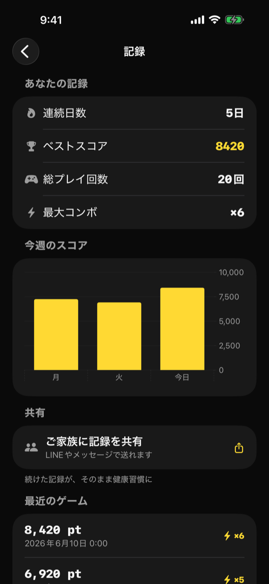

「あなたの脳活記録」コンセプトで再設計（v1.3.0〜）。4指標・週次グラフ・家族共有機能を搭載

ユーザーの継続プレイを可視化し、達成感と継続モチベーションを高める。 ご家族への共有機能を通じて「家族で続ける脳活習慣」を促進する。
| 指標名 | データソース | 表示形式 |
|---|---|---|
| 連続日数 | StreakManager.currentStreak | 〇日 |
| ベストスコア | HighScoreRecord | 3桁区切り数値 |
| 総プレイ回数 | StatRecord 件数 | 〇回 |
| 最大コンボ（v1.3 新規） | StatRecord.maxCombo 全期間最大 | ×〇 |
Locale 非依存）Calendar.current.isDateInToday(date) で判定）ShareLink（ネイティブ Share Sheet）【脳活ピース・記録】
連続日数: 14日 / ベストスコア: 3,840 / 総プレイ回数: 42回 / 最大コンボ: ×8共有テキストはローカル生成のみ（ネットワーク通信なし）。
| 項目 | 説明 |
|---|---|
| スコア | 3桁区切り |
| プレイ日時 | yyyy/MM/dd HH:mm 形式 |
| 最大コンボ（v1.3 新規） | ×〇 形式。旧データは ×0 表示 |
| 状態 | 説明 |
|---|---|
| 初回表示（プレイ履歴なし） | サマリーカードはすべて 0 / グラフは空 / 履歴リストは「まだ記録がありません」を表示 |
| 通常表示 | 全指標・グラフ・履歴を表示 |
| 共有シート表示中 | Share Sheet がオーバーレイ表示。統計画面は背後で残る |
HighScoreRecord（@Query）
StatRecord（@Query, sort: .reverse, limit: 10 for list / 全件 for graph）
StreakManager.currentStreak（@Observable）StatRecord.maxCombo の max() で全件から求めるStatRecord から当週分をフィルタし、曜日ごとに最高スコアを集計するShareLink のラベルには Image(systemName: "square.and.arrow.up") + テキストを使用StatRecord（maxCombo なし）は default 0 で自動マイグレーション済み。表示上は ×0 となる| バージョン | 日付 | 変更内容 |
|---|---|---|
| 1.0 | 2026-05-09 | 初版作成 |
| 1.1 | 2026-05-19 | v1.3.0 対応: 画面名を「統計」→「脳活記録」へリネーム。4指標（連続日数・ベストスコア・総プレイ回数・最大コンボ）・週次グラフ・ShareLink 家族共有・直近10ゲーム最大コンボ表示を追加 |
| 1.2 | 2026-06-10 | 画面イメージ（fastlane snapshot 自動撮影）を追加 |